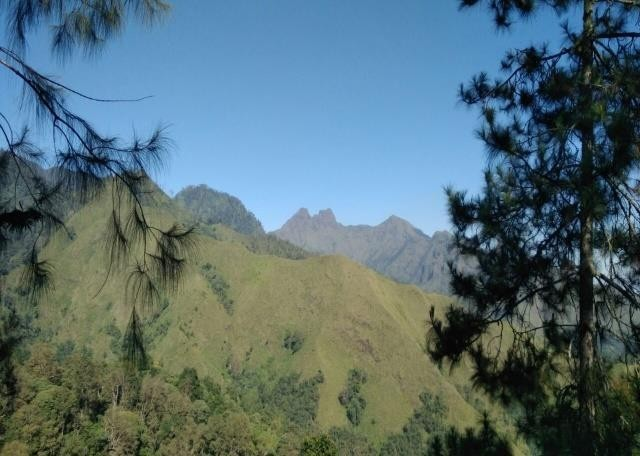
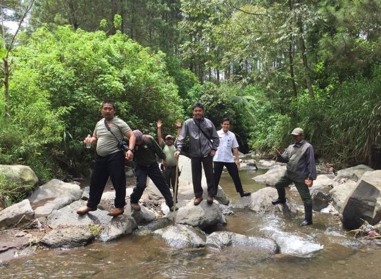
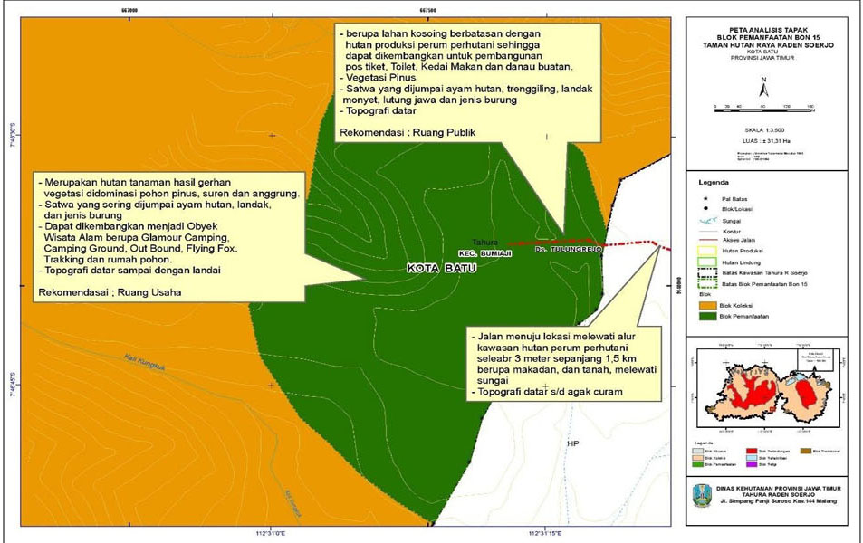

panduan wisata -
wisata alam bon 15

Letak geografis
Objek wisata Bon 15 Merupakan blok pemanfaatan pada kawasan Tahura Raden Soerjo seluas 31,32 ha pada posisi 7° 46’ 27,22” – 7° 46’ 52,69 LS dan 112° 30’ 58,81” – 112° 31’ 16,85” BT, secara administratif berada di Desa Tulungrejo Kecamatan Bumiaji Kota Batu, Lokasi tersebut berada pada ketinggian 1.800 mdpl
Blok pemanfaatan Bon 15 merupakan hutan tanaman hasil reboisasi tahun 2004 melalui kegiatan gerhan. Untuk menuju ke lokasi dari jalan raya Batu-Cangar dapat ditempuh dengan jalan kaki sepanjang 1,5 km melewati alur perum perhutani kondisi jalan makadam, menurun dan melewati sungai.

Bon 15 bisa menjadi destinasi wisata alam yang menarik untuk dikunjungi karena mempunyai panorama di sekitar lokasi sangat bagus di samping udara yang segar dan dalam perjalanan menuju lokasi Bon 15 dijumpai aliran sungai yang cukup jernih juga dapat menikmati pemandangan yang menarik untuk dinikmati pada lokasi tersebut, maka pengunjung tidak akan merasa lelah karena dapat menikmati perjalanan menuju tempat tersebut dengan keadaan lingkungan yang terjaga dan juga pemandangan disekitarnya, sehingga pada lokasi tersebut dapat dikembangkan menjadi suatu Obyek Wisata Alam berupa Glamour Camping, Camping Ground, Out Bound, Flying Fox, Tracking , High Rope Adventure dan danau buatan.
flora
Berbagai macam tumbuhan yang berada di Bon 15 antara lain Pohon Pinus ( Pinus Mercusi ) dan suren (Tona sureni) sehingga udaranya terasa sejuk.


fauna
Satwa yang sering dijumpai yaitu lutung jawa (Trapytecus auratus), ayam hutan (Galus sp), monyet ekor panjang (Macaca fascicularis), babi (Sus scrofa) dan landak (Hystrix brachyura).
Berdasarkan letak geografisnya, berikut ini adalah Peta Deskripsi Analisis Tapak Pengelolaan Lokasi Pariwisata Bon 15.

Yang menjadi lebih menarik dan membuat wisatawan lebih merasa aman pada Blok Pemanfaatan Bon 15 tidak ada kasus perambahan hutan sehingga masih terjaga keasriannya juga bukan merupakan jalur lintas satwa liar besar yang dapat membahayakan pengunjung, serta tidak ada potensi bencana banjir, longsor dan erosi. Tidak ada sumber air namun terdapat sumber air pada blok yang berdekatan yaitu pada blok koleksi tumbuhan.